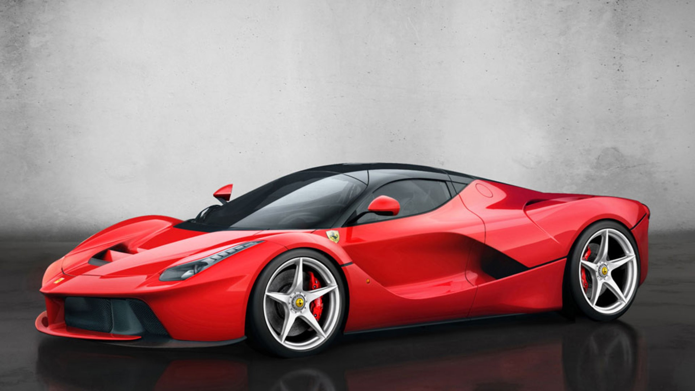

Nossa História
O portal Cilindrada Rossa nasceu da paixão genuína pelo automobilismo e pelo fascínio pela engenharia de precisão que emana de Maranello. O projeto foi idealizado para ser um ponto de encontro definitivo de entusiastas e colecionadores, reunindo a rica herança deixada por Enzo Ferrari com a constante evolução tecnológica da marca do Cavallino Rampante.
Ao longo dos anos, o ecossistema da Ferrari consolidou-se como um pilar fundamental da cultura automotiva global. No Cilindrada Rossa, nossa missão é traduzir essa história com profundidade e rigor técnico. Cobrimos desde os primeiros triunfos das lendárias barchettas dos anos 1940 e 1950 até o auge da sofisticação aerodinâmica na Fórmula 1 contemporânea e nos hipercarros híbridos de rua.
Acreditamos que cada modelo com o emblema do cavalo empinado carrega uma alma própria, esculpida pelo som inconfundível de seus motores e pelo design marcante assinado pelas melhores casas de estilo italianas. Seja explorando detalhes de restaurações de clássicos raros ou analisando dados de telemetria das corridas atuais, nosso compromisso é oferecer conteúdo de alta qualidade para quem tem o Rosso Corsa correndo nas veias.

Nossos Pilares
Tradição
Preservação e celebração da herança histórica deixada por Enzo Ferrari. Resgatamos as memórias das pistas, o legado dos modelos atemporais e a paixão artesanal que transformou uma fábrica em Maranello em um ícone mundial do automobilismo.
Engenharia
Análise aprofundada da alta performance e da inovação tecnológica. Exploramos a aerodinâmica de ponta, a precisão dos chassi e o desenvolvimento dos lendários motores de alta cilindrada que definem o padrão de excelência da marca.
Comunidade
O ponto de encontro definitivo para entusiastas, colecionadores e fãs da Scuderia. Um espaço feito para compartilhar experiências, debater o universo das corridas e cultivar a cultura do Rosso Corsa entre gerações de apaixonados.